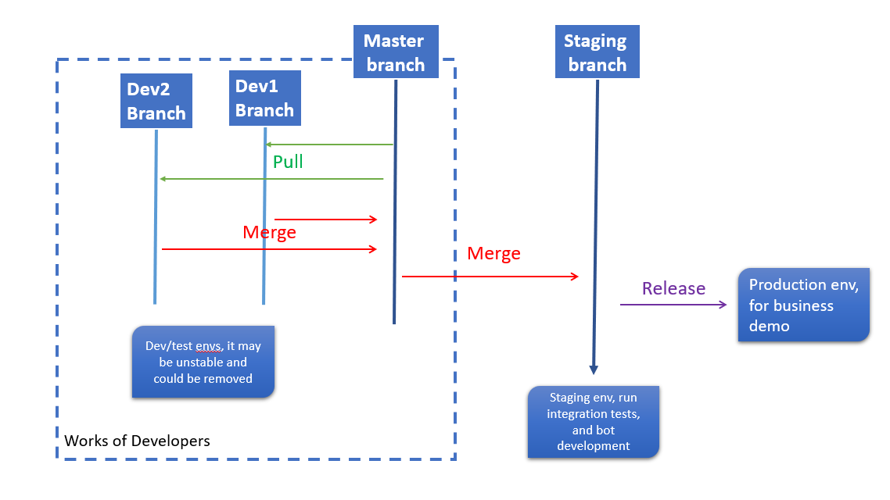

SeaChat Deployment Tutorial¶
By this point, you should have your first working chatbot! However, your bot won’t do any good if it’s stuck on your local machine. The next step is to deploy the bot to a computing cluster where it can run 24/7 and eventually be accessed by users via an external channel (such a Facebook messenger, Slack, or Google Business Messages).
Deployment Process Overview¶
Seasalt uses Microsoft Azure for cloud computing and deployment. Within Azure, we use Kubernetes, a system for container deployment, scaling, and management.
Here’s a fundamental intro to cloud computing and Microsoft Azure.
Here’s an introduction to Kubernetes.
The Seasalt cluster has two main environments: the staging environment and the production environment. The staging environment is where active development takes place - developers may be frequently training and testings new versions of their bots in staging. The production environment, on the other hand, is tightly controlled and only contains the best working version of each deployed bot. In most cases, the bot developer will only interact with the staging server. The desired workflow involves the developer iterating on bot improvements within the staging cluster, then alerting the release manager when the changes are ready to be implemented in the production environment. Before moving to production, the new changes must be confirmed to work as expected in the staging environment, reviewed thoroughly by team members in a pull request, and merged into the master branch in the github repository. Once all these steps are completed, the developer should work with the release manager to select which commits should be moved to production. The release manager will then package up the changes and deploy them to the production environment.
SeaChat Extension¶
Bot deployment to the Seasalt cluster is facilitated by the SeaChat extension. Through the extension you can register a new bot on the cluster, train & save a model, and deploy a bot to staging environment.
Extension Setup¶
You must be using the VSCode IDE to use the SeaChat Extension. Within VSCode, go to the extensions marketplace, search for SeaChat, and click install.
You should now see a new extension with the SeaChat logo on the left hand toolbar. Before interacting with the SeaChat extension, make sure that the settings are configured properly. Go to File -> Preferences -> Settings, and search for SeaChat. Make sure that the APIHost field has the following url: https://SeaChat-backstage.seasalt.ai/.
Registering a New Bot¶
Once this is configured, you can navigate to the SeaChat extension and login with your Seasalt username and password. You should see a list of all available bots in your current working directory. You may notice that it says Invalid next to some bots’ names. This means that the bot has not yet been registered on the Seasalt cluster. To register a new bot, click the bot name to open the drop down menu and click Please register the bot.
If the bot registration is successful, you should see a new file called .ngChat.bot appear in the bot directory. This file contains an encrypted version of the bot’s new ID. This ID will be used in several places, including in the bot’s webhook when it is connected to an external channel.
Training & Deploying a Bot¶
Now that the bot is registered, you should see some new options in the dropdown menu within the extension. If you click on SeaChat Workflow, you should see two options: Train E2E and Model List. To train a bot, simply click the Train E2E button. Make sure that your most recent work is committed and pushed up to the remote repository. If you have un-committed or un-pushed changes, the extension will ask you how to proceed. Once you start the training, you should see a training status notification in the bottom right. If an error occurs during training, you will see an error message in the same location.
Once the bot is successfully trained, click the Model List button to see your available models. To deploy a model to the staging environment, click the Active button on the model you want to deploy. While in the process of deploying to the cluster, the Active button will flash green. Once the deployment is completed, the active model will show as solid green.
Other Extension Capabilities¶
You may have noticed that each bot also has Conversations and Configuration tabs in the extension. These features are not fully fleshed out yet - feel free to play around with them, and stay tuned for updates.
Debugging on the Cluster¶
Occasionally when deploying to the cluster, you will encounter errors that you did not see locally. Most often this is due to a dependency issue on the cluster, an error from the external channel (such as FB or GBM), or an issue with the bot’s container. In order to debug these issues, you will likely need to access the cluster directly.
Local Setup¶
First, install Kubernetes and Azure CLI. Next, login to Azure from your local machine. Finally, get the Kubernetes credentials. For this last step, you may need to ask you supervisor to give your account the proper permissions through Azure; also ask your supervisor for the cluster name and resource group information.
Accessing the Cluster¶
Once you are set up with the proper credentials, you should be able to access the cluster on you local machine. Try running $ kubectl get pods -n staging, and you should get a response like this:
In general, each bot has two pods: a core pod (which is running the main rasa service) and an actions pod (which is running the actions server). You can check the age of the pod in the far right column; this number is reset each time the bot is re-deployed, so you can check if your deployment process completed recently or not. In the STATUS column, you hope to see Running. You may also see ContainerCreating or ContainerTerminating, this usually means that the deployment process if finishing up, so try waiting a few more minutes. Any other status, especially CrashLoopBackOff, usually signals an issue on the cluster side, so it’s probably best to bring that to the attention of a supervisor.
If the pod successfully deployed but is not responding, it may be an issue with the bot itself. You can check the logs of a pod with the following command: kubectl logs -f {full pod name} -n staging. The -f flag means that the logs will display in real time until you kill the process. From these logs you should be able to see messages coming in from external sources as well as from the monitor (which sends a message to each bot every few seconds to make sure that they are all responding). You should also see the bot’s response.
If the bot failed during training or deployment, you won’t be able to find the issue within the bot’s pods, because the new pods were not successfully created. Instead, you’ll need to look at the logs of the trainer-worker pod. This pod is in charge of queuing and executing the train and deploy jobs.
If you have checked the status of the pod and the logs and everything looks okay, but you’re still encountering an issue, some more in-depth debugging may be necessary; talk to your supervisor.
Kubernetes Quality of Life¶
There are some resources that will improve your quality of life working with Kubernetes.
Click is a tool to make repeated kubectl tasks less awful. Start click by invoking the click command from the command-line. You can use the help command for a list of available commands. You
will most likely want to start by using the context command to set the
current context to the ngchat-dev-cluster
$ context ngchat-dev-cluster
Next, select a namespace, for example:
$ namespace staging
To get a list of the pods running in this namespace, use the pods command.
Rather than running a command and specifying the target object, enter a number
from the list to change the current context, as shown in the command prompt,
then enter a command to be run against the currently selected object.
For example, to delete a pod, run the pods command to get the list of pods,
enter the number corresponding to the pod you wish to delete, then enter the
delete command.
To back out of a selected context, use the clear command.
Use the exit command to quit.
Stern is a tool for following logs based on
a regular expression, rather than an individual container ID. This means you do
not need to re-run your kubectl logs -f command even if, for example, you
delete and re-create a pod.
Download an appropriate binary from
here, and copy it to somewhere in your
path as stern. e.g:
$ sudo cp ~/Downloads/stern_linux_amd64 /usr/local/bin/stern
You may also need to make the binary executable:
$ sudo chmod +x /usr/local/stern
To follow the logs of any container in a trainer-worker pod, for example,
run the following: $ stern trainer-worker-.*.
The pod query is a regular expression, meaning you can use any regular expressions
to filter the output.
Finally, Microsoft has a tutorial and extension for working with Kubernetes in VSCode, which you can find here.